분석 참고용 · 제안(검수 대기) · 제품조립완료 아님
신규 고유 구조 / P1
영상 시작부터 열림. 기존 로비 시작→이 화면은 미관찰.
기존 로비로 종료/복귀 미관찰.
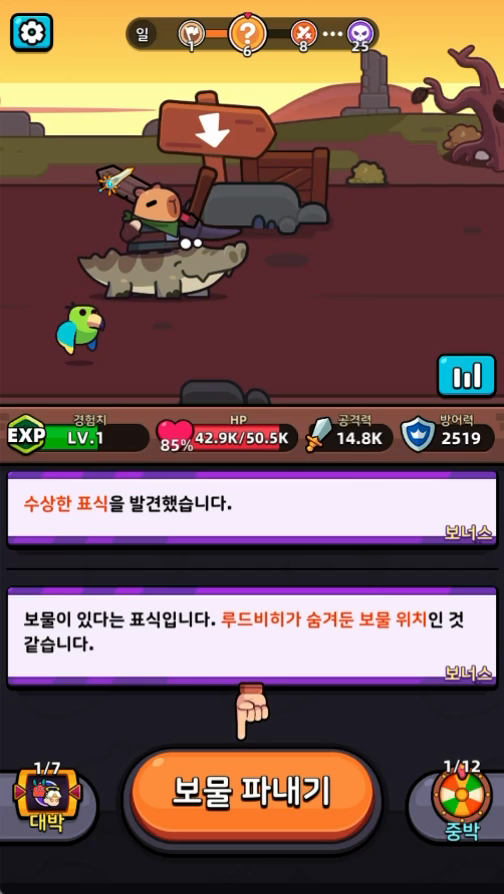
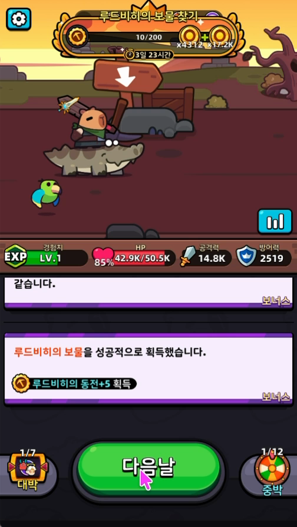
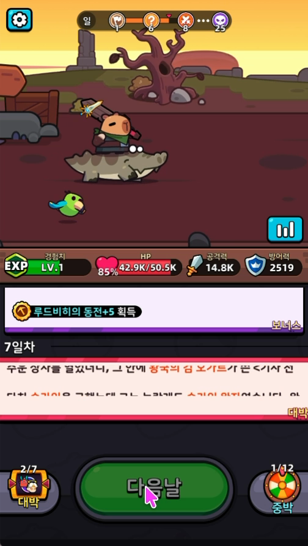
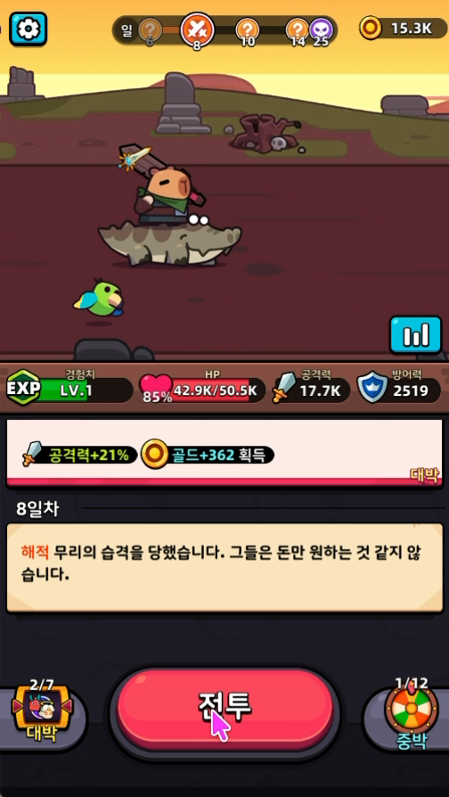
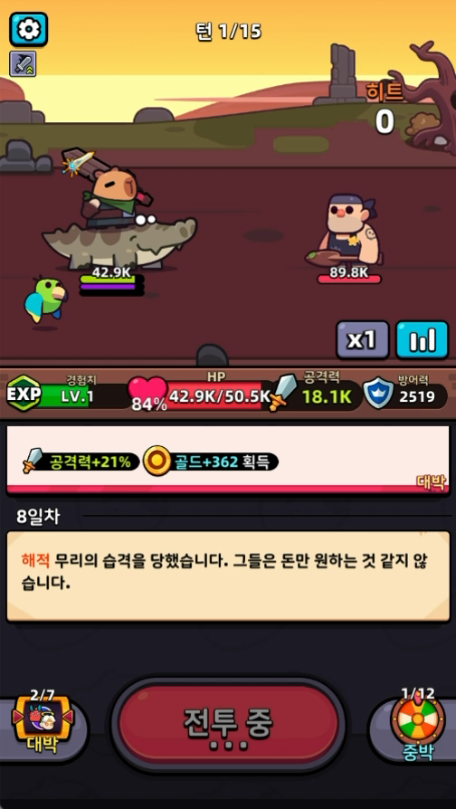
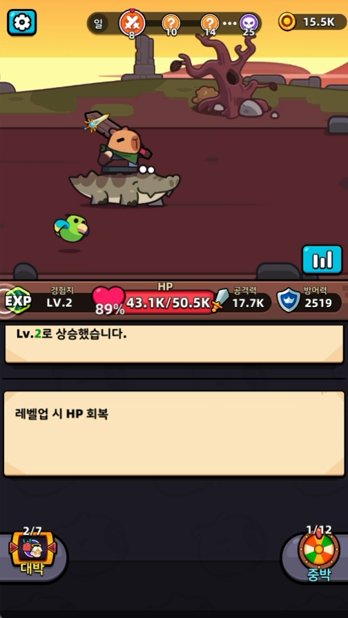
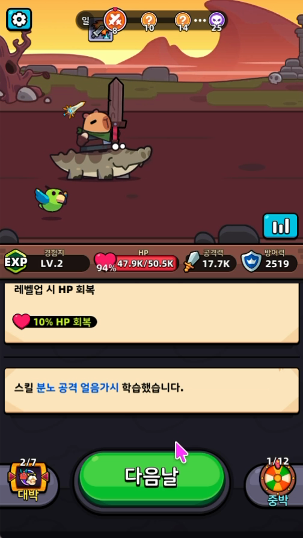
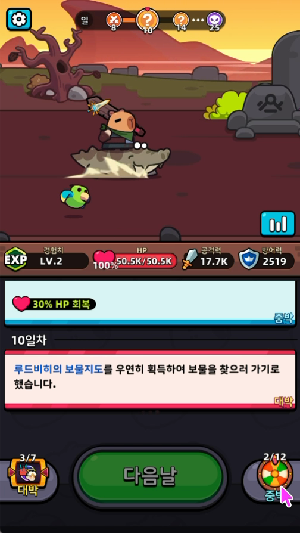
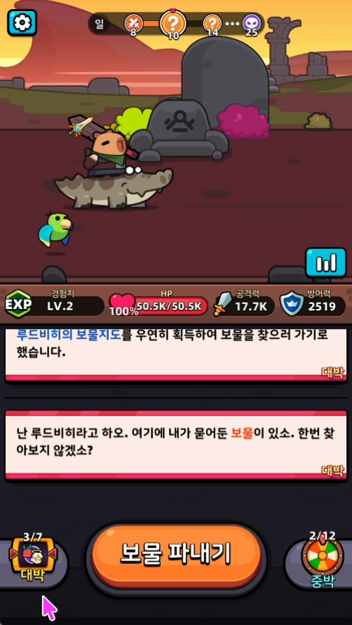
신규 고유 구조 / P1
N01 레벨2 상승 뒤 23.558초 선택 오버레이 출현.
32.875초 모험 복귀 뒤 분노 공격 얼음가시 학습 로그 관찰. 별도×는 보이지 않음.
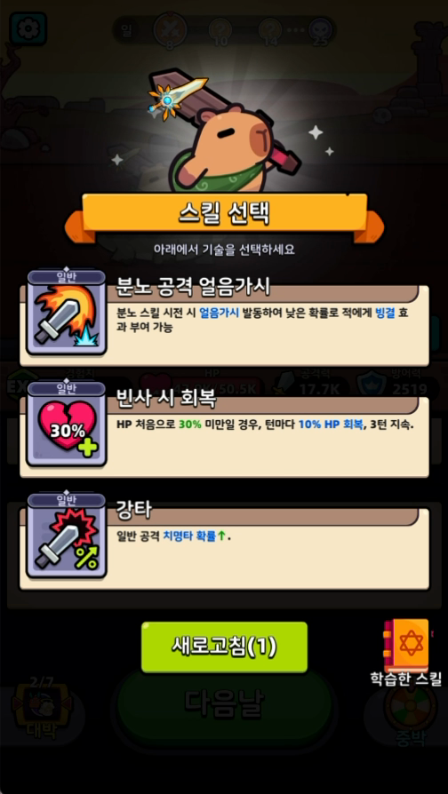
기존 유사 변형 / P2
N01 우하단 중박 입구→41.325초 룰렛 출현.
42.867초 하단× 뒤 N01 복귀.
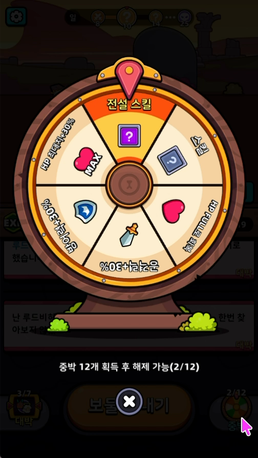
신규 고유 구조 / P1
N01 좌하단 대박 입구→43.883초 딤,44.125초 슬롯 본체 출현.
하단×가 보이지만48.890초 영상끝까지 닫기 미실행. N01 복귀 연결은 미관찰 제안으로만 둠.
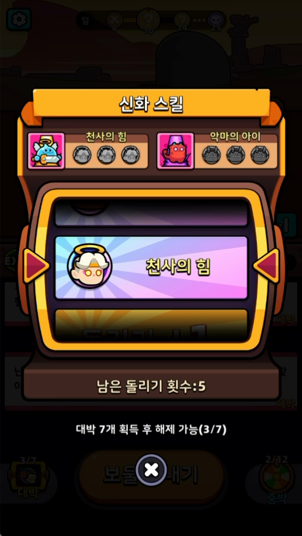